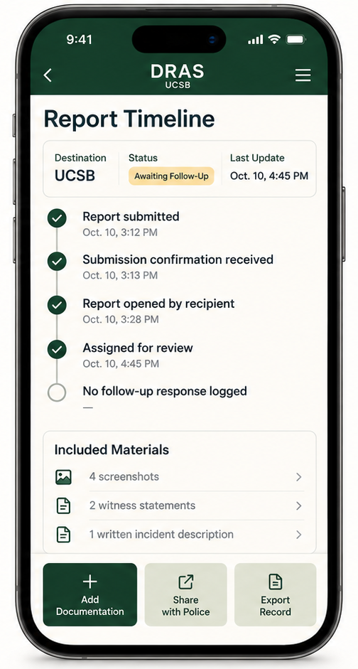
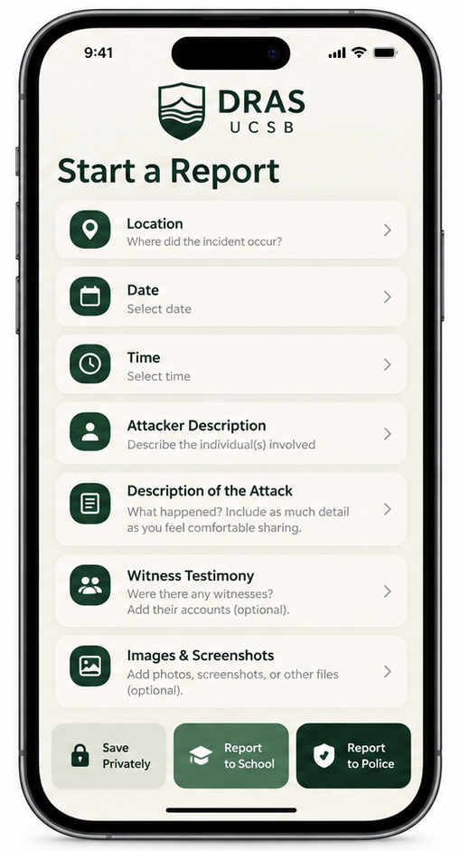

Build a private record
Save date, time, location, your recollection, attacker description, witness information, images, screenshots, and other documentation.
Document. Report. Advocate. Support.
DRAS UCSB is a class-project prototype designed around survivor control: document what happened, preserve supporting material, choose where a report is sent, and keep a clear record of what happens afterward.
Prototype only: DRAS does not currently submit reports, receive case updates, or integrate with UCSB or law enforcement. The official links below go directly to the agencies that actually receive reports.

Why DRAS exists
Survivors may need time before deciding whether to report. They may also want a reliable record of what they documented, what evidence they preserved, where information was sent, and whether a response was received.
DRAS is designed as an additional documentation and tracking layer — not a replacement for UCSB Title IX, CARE, police, medical services, or community survivor organizations.
Prototype workflow

Save date, time, location, your recollection, attacker description, witness information, images, screenshots, and other documentation.
Keep the record private, use UCSB’s official Title IX process, or report to the appropriate law-enforcement agency.
The DRAS concept centers a timeline of when materials were created, sent, confirmed, updated, or still awaiting a response.
Report tracking concept
In a future integrated system, a survivor could keep submission receipts and verified updates in one timeline. DRAS would not infer an agency’s actions: an update would only appear when the survivor adds it or when the receiving system confirms it.
Privacy & scope
The survivor controls the record until they choose to share it.
DRAS is not designed to publish accused individuals or decide whether someone is guilty.
A future version could organize the survivor’s own documentation and receipts into a record they can keep or share.
Official reporting options
Use the option that matches where the incident occurred and what kind of response you want. These links leave the DRAS prototype and go to official agency pages.
UCSB’s Title IX Compliance & Discrimination and Harassment Prevention Office receives reports involving sexual violence, sexual harassment, discrimination, and related prohibited conduct.
UCPD handles crimes on UCSB property, including campus and university housing. Its online form is for non-urgent incidents; urgent matters should be called in.
The Santa Barbara County Sheriff’s Office Isla Vista Foot Patrol handles crimes in Isla Vista that occur off university property.
Confidential & community support
These services can help someone understand options, receive confidential support, or connect with care in UCSB and Isla Vista.
CARE provides confidential advocacy for sexual violence, relationship violence, and stalking. Advocates can explain rights and options and support a survivor whether or not they choose to report.
24/7 confidential line: 805-893-4613
Campus: Student Resource Building, 2nd floor
Isla Vista satellite: Gaucho Support Center, 970 Embarcadero Del Mar
UCSB CARE ↗Standing Together to End Sexual Assault provides confidential counseling and support for sexual-assault survivors and loved ones. The Isla Vista Community Services District lists STESA support through the Survivor Resource Center in Isla Vista.
24-hour hotline: 805-564-3696
IV Survivor Resource Center: 970 Embarcadero Del Mar
STESA ↗Counseling & Psychological Services provides counseling and consultation for registered UCSB students, with phone consultation available 24/7.
24/7: 805-893-4411
UCSB CAPS ↗The Isla Vista Community Services District maintains a local survivor-resource hub covering advocacy, healing, legal options, reporting, and community programs.
IV Survivor Resources Hub ↗The issue is not being able to report sexual assault; it is the aftermath of that report.
Prototype note
The reporting and support information above links to current official UCSB, Santa Barbara County Sheriff, STESA, CAPS, and Isla Vista Community Services District pages.
Before relying on any phone number, address, or procedure in the future, confirm it on the linked official site because services and processes can change.